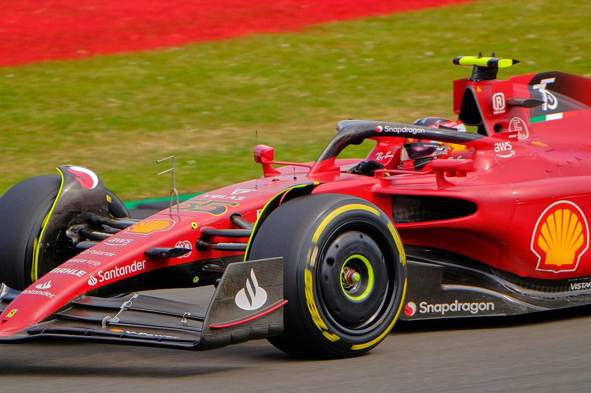

Un deporte ilusionante con muchas desilusiones

Imágen del Ferrari F2000 de Michael Schumacher publicada por AlLes en pixabay.
En esta primera historia de mi blog me gustaría resaltar mi experiencia personal con los deportes de motor, más concretamente por la Formula 1. Si mo recuerdo mal, la primera temporada que tengo consciencia de seguir, (aunque solo viese algunas carreras de forma esporádica) fue la de 2010. Ese año Fernando Alonso había fichado por la Scuderia Ferrari y recuerdo que todos estábamos muy ilusionados imaginándonos que al fin podría ganar su tercer título mundial después de la desilusión de 2007. Ese año Fernando hizo una temporada espectacular llegando a la última carrera en Yas Marina (Abu Dhabi) en lo alto de la clasificación general. Se avecinaba una carrera apasionante con hasta 4 pilotos (Alonso, Webber, Vettel y Hamilton) con opciones de coronarse campeones.
Así estaba la clasificación:
- Fernando Alonso (Scuderia Ferrari) 246 puntos
- Mark Webber (Red Bull Racing) 238 puntos
- Sebastian Vettel (Red Bull Racing) 231 puntos
- Lewis Hamilton (McLaren Mercedes) 222 puntos
Así acabó el mundial:
- Sebastian Vettel (Red Bull Racing) 256 puntos
- Fernando Alonso (Scuderia Ferrari) 252 puntos
- Mark Webber (Red Bull Racing) 242 puntos
- Lewis Hamilton (McLaren Mercedes) 240 puntos
Pero si lo de Abu Dhabi 2010 parecía doloroso, lo de Brasil 2012 fue aún peor. En un año en el que Red Bull fue el equipo a batir, ALonso se mantuvo en la batalla con actuaciones memorables como la del Gran Premio de Valencia, donde saliendo en la udécima posición, acabó ganado la carrera. Esa temporada, con un Ferrari que ni siquiera estaba entre los tres mejores coches de la parrilla, Fernando se mantuvo lider durante toda la temporada hasta que en el Gran Premio de Bélgica, Grosjean,en una "kamikazada" sin precedentes, se lo llevó puesto en la salida, obligando al asturiano a abandonar. Aun así, Fernando llegó segundo al Gran Premio de Brasil con opciones de coronarse tricampeón.
Así estaba la clasificación:
- Sebastian Vettel (Red Bull Racing) 273 puntos
- Fernando Alonso (Red Bull Racing) 260 puntos º
En una carrera loca bajo la lluvia, Vettel se accidentó en la tercera curva y se puso último al final de la primera vuelta. Todos pensábamos que esta vez sería, que a la tercera iba la vencida. Pero las carreras son muy largas (esta en concreto, 71 vueltas al circuito de Interlagos) y Sebastian consiguió escalar hasta la 6ª posición, haciendo inutil el 2º puesto de Fernando y dejando patente que aun con el coche tocado, el Red Bull seguía siendo infinitamente superior al Ferrari. Una vez más, se repitió lo de 2007.
Así acabó el mundial:
- Sebastian Vettel (Red Bull Racing) 281 puntos
- Fermando Alonso (Red Bull Racing) 278 puntos
En 2015, Alonso volvió a McLaren para comenzar un proyecto que una vez más parecía ilusionante pero que se vio truncado por la baja fiabilidad de los motores Honda, que hicieron que Fernando se arrastrase por las pistas hasta su retiro en 2018. Sin embargo, en ese mismo año debutaba otro español en la parrilla, Carlos Sainz Jr. que desde sus primeras carreras comenzó a demostrar un gran talento. Con el retiro de Alonso, Sainz fichó por Mclaren logrando sus primeros podios con la escuería británica, que volvió a resurgir del abismo. En 2021 Alonso volvió de su retiro y fichó por Alpine (secesora de Renault) mientras que Carlos se mudó a Ferrari. Si bien la temporada 2021 no destacó por la actuación de los nuestros sinó por el vibrante duelo entre Hamilton y Verstappen, en 2022 la Scuderia construyó un coche sumamente veloz que permitió a Sainz ganar su primera carrera en el trazado británico de Silverstone.
Carlos Sainz ganó su primera carrera en el GP de Gran Bretaña de 2022. Fuente: wikipedia.org
A Fernando no le fue tan bien. Los roces con su compañero Esteban Ocon hicieron que Alonso se cansase y abandonase Alpine, fichando al final de la temporada por Aston Martin, equipo que había acabado en le parte baja de la clasificación. Fuimos muchos los excépticos con este movimiento, pues no veíamos lógico pasar del 4º al 8º equipo de la parrilla. Pero una vez más ocurrió la magia en este deporte. Aston Martin construyó un auténtico cohete que ha permitido a Alonso lograr dos podios en las dos primeras carreras del campeonato lo que, sin duda, nos ha devuelto a todos la ilusion.